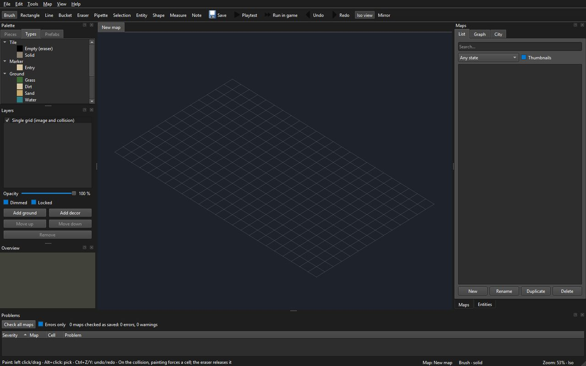
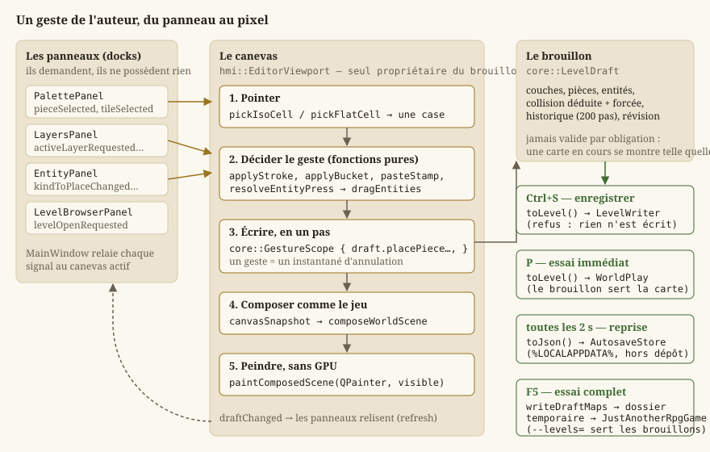
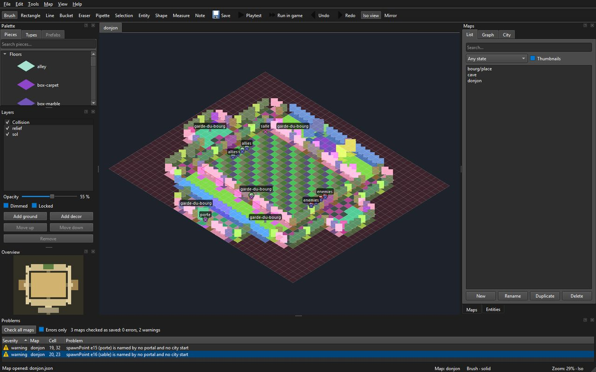
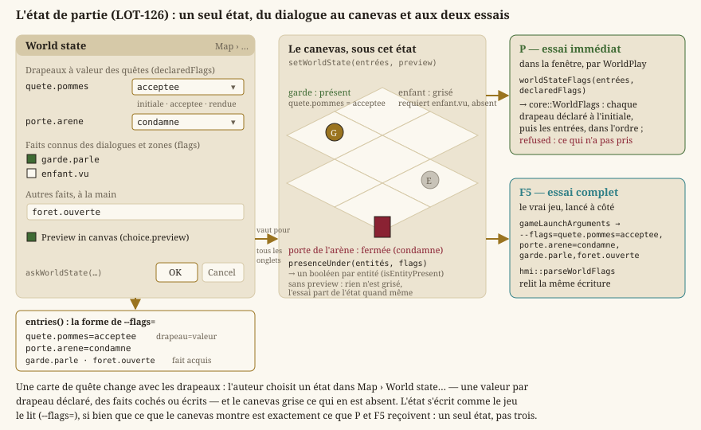
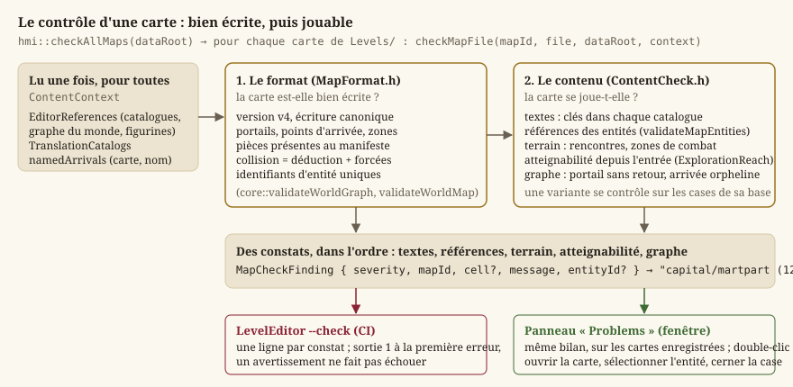
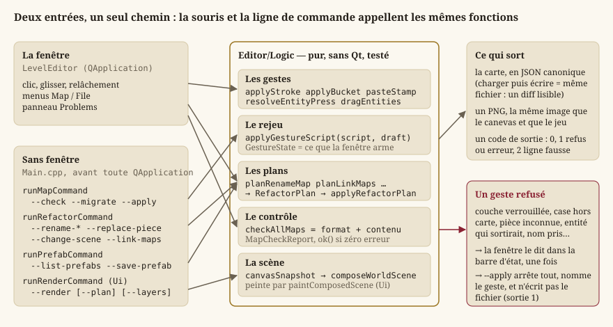
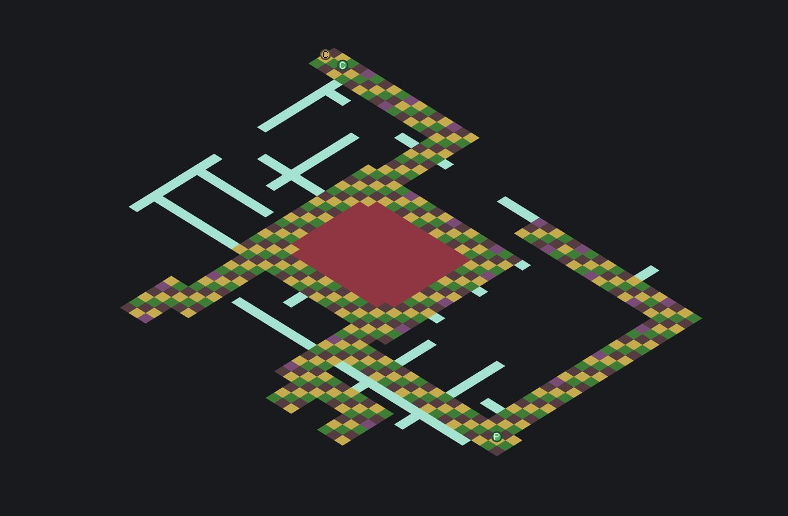
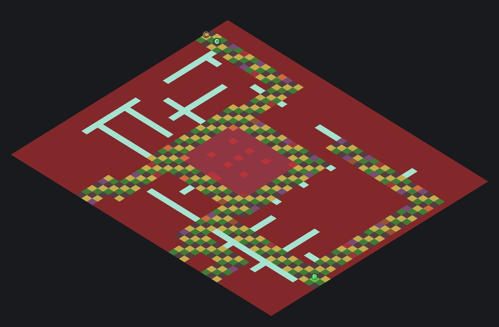
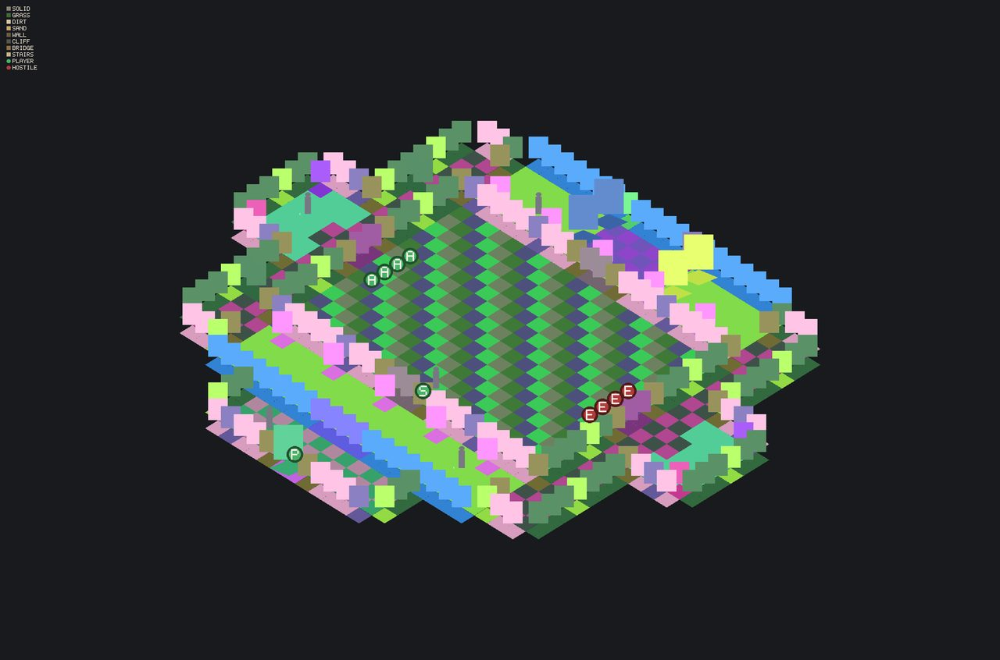

Éditeur de niveaux
Binaire séparé depuis le
LOT-86(LevelEditor), module à part depuis leLOT-EDITOR-01(Source/Editor). Il n'héberge aucun écran du jeu, qui vit en Qt Quick dansJustAnotherRpgGame: sa fenêtre s'ouvre directement sur une carte, et son widget central est le canevas. C'est un outil interne : style Fusion, textes anglais écrits dans le code, widgets construits en code. Son programme fut la feuille de route de l'éditeur, close le 21 septembre 2026 ; ses lots à venir sont la filièreediteurdu planning (LOT-123àLOT-127,LOT-168).
Cette page explique comment l'éditeur transforme le modèle de carte de Niveaux : modèle, couches, entités, chargement en un outil de création de contenu, sans écrire un second moteur. Elle traite chaque en-tête de Source/Editor/Logic (la logique pure, sans Qt, testée dans Source/Test/Unit/Editor) et de Source/Editor/Ui (les widgets), sous-système par sous-système : le brouillon et ses fichiers, les gestes et les outils, le canevas et sa peinture, les entités, le monde, le contrôle du contenu, le mode sans fenêtre, enfin la fenêtre et ses panneaux. Tout ce qui est écrit ici vit dans l'espace de noms hmi, sauf le brouillon lui-même (core::LevelDraft) : le module dépend de Core et de la composition de scène, et rien ne dépend de lui — ni le jeu, ni HmiLib.
{kind=link}

Le problème : éditer une carte sans (re)coder le moteur
core::Level est immuable une fois construit : ses champs sont posés au constructeur, sans mutateur. C'est un choix délibéré — une carte en cours de jeu ne doit jamais changer de forme sous les pieds du joueur. Mais un éditeur fait exactement l'inverse : poser une pièce, la retirer, déplacer l'entrée sont des opérations répétées des dizaines de fois par minute. Réutiliser Level pour l'édition obligerait soit à le rendre mutable (fragilisant l'invariant « une carte chargée est valide »), soit à dupliquer sa logique dans un second type — ce que EX-EDIT-010 interdit.
La solution : un type distinct, core::LevelDraft, qui porte toute la mutabilité et ne redevient un Level validé qu'au moment décisif (l'enregistrement ou l'essai), en repassant par le chemin de validation existant. Autour de lui, l'éditeur applique cinq règles, celles de la feuille de route, que chaque section retrouve :
- Le brouillon est la seule source. Le canevas en est le seul propriétaire ; les panneaux demandent, il applique.
- Tout ce qui a une règle est pur et testé dans
Logic/; l'IHM ne fait que l'afficher. - Un geste, un pas. Du clic au relâchement, un geste se défait d'un seul
Ctrl+Z(core::GestureScope,EX-EDIT-066). - La souris et la ligne de commande appellent les mêmes fonctions, dans le même ordre (
EX-EDIT-074). - Aucun travail perdu : sauvegarde automatique, garde du fichier sur disque, historique plafonné (
EX-EDIT-056àEX-EDIT-058).
{kind=link}

Le brouillon : core::LevelDraft
LevelDraft reprend les données d'un Level (nom, grille de tuiles, entrée, couches, entités, propriétés de carte) et expose des mutateurs : paintTile et paintRegion sur la grille racine, setEntry, resize ; addLayer, removeLayer, renameLayer, moveLayer, setLayerKind, setLayerProperty, paintLayerTile, paintLayerRegion sur les couches visuelles ; placePiece, placePieceRegion, eraseLayerRegion, unforceCollision, replacePieces, changeScene sur les pièces ; placeEntity, moveEntity, replaceEntity, removeEntity, setEntityProperty, removeEntityProperty sur les entités ; setProperty et setName sur la carte. Trois invariants structurent tout le reste de la page :
- La collision se déduit des pièces, sauf là où la main l'a forcée (décision D10 du format v4,
LOT-EDITOR-12). Le brouillon reçoit le manifeste des pièces du lieu (core::LevelDraft::setPieceManifest) ; à chaque geste, il recalcule la collision des cases touchées (core::deriveCollision) et, si la grille écrite s'en écarte, la case devient forcée (core::LevelDraft::forcedCollision,isCollisionForced). Le jeu, lui, lit la carte sans manifeste : ce que le fichier dit est ce qui se joue. toLevel()ne réimplémente aucune règle de validation. Il sérialise le brouillon (toJson, parcore::LevelWriter) puis le fait passer parcore::LevelLoader::loadFromString— le même chemin qu'un fichier lu sur disque. Un brouillon incomplet produit exactement le message d'un fichier mal formé (EX-LVL-004).- Un geste est un pas d'annulation.
beginGesture/endGesture, portés par le gardecore::GestureScope, regroupent toutes les mutations d'un geste sous un instantané ;undo,redo,canUndo,canRedo,undoDepthparcourent un historique linéaire, plafonné àcore::LevelDraft::UNDO_HISTORY_LIMITpas (200,EX-EDIT-058). Chaque état porte une révision (core::LevelDraft::revision) : une mutation en donne une neuve,undoetredorendent celle de l'état restauré. C'est elle qui dit si la carte est modifiée.
Le choix d'un instantané complet plutôt que d'un enregistrement différentiel est délibéré : un différentiel demande une logique d'inversion propre à chaque mutation (annuler un redimensionnement n'est pas l'inverse symétrique de le refaire) ; les cartes restent de taille modeste, copier l'état entier est assez rapide, et la garantie « l'état restitué est identique à l'octet près » est bien plus simple à établir.
Deux requêtes pures servent la fenêtre sans qu'elle ait à rederiver une règle : core::LevelDraft::wouldResizeDropContent(largeur, hauteur) dit si un redimensionnement perdrait l'entrée, une entité ou une pièce, sans rien modifier (EX-EDIT-010) ; core::LevelDraft::entityAt donne l'entité d'une case. nextEntityId est le prochain identifiant e<n> que le brouillon donnera : un identifiant, une fois donné, n'est jamais réemployé (décision D8).
Le brouillon et ses fichiers
Où sont les données : DataRoot.h
Jusqu'au LOT-EDITOR-06, la fenêtre ouvrait les cartes à côté de l'exécutable, dans la copie que la construction refait à chaque fois : ce qu'on enregistrait n'atteignait jamais le dépôt. L'éditeur faisant foi pour les cartes (décision D4, EX-EDIT-078), il ouvre désormais l'arbre des sources qui l'a construit.
hmi::resolveDataRoot(arguments, dossierExécutable, sourceData)choisit, dans l'ordre : la valeur de--data; sinonSource/Elementsde l'arbre des sources, s'il existe sur ce poste ; sinon le dossier de l'exécutable. Ce qui fait reconnaître l'arbre des sources est la présence deLevels/, pas son contenu : un dossier sans aucune carte est légitime (LOT-123, table rase duLOT-102), et c'estLevels/README.mdqui le tient dans le dépôt.hmi::setEditorDataRootethmi::editorDataRootfixent et rendent cette racine, une fois, au lancement :Levels/,Assets/,World/,Localization/,Editor/y vivent.
Créer, renommer, dupliquer, supprimer : LevelFileOperations.h, LevelNameValidation.h
hmi::LevelFileOperations(levelsDir, levelsRoot) est la couche pure des opérations de fichier (EX-IHM-021) ; chaque opération rend un hmi::FileOperationResult — succès avec le chemin, ou échec avec un message, jamais d'exception (EX-NFR-040). Le type est déclaré à part (FileOperationResult.h) parce qu'il appartient à plusieurs modules ; il expose ok() en méthode, comme core::LevelLoadResult, pour qu'un lecteur n'ait pas à se souvenir duquel il parle.
list(): les fichiers.jsondu dossier, triés.create(nom, largeur, hauteur, lieu, modèle): une carte minimale valide, entrée au coin bas gauche. Sans lieu, une grille unique vide. Avec un lieu (EX-EDIT-077), la carte naît comme les cartes livrées : une couche de solsolqui nomme le lieu (propriétéscene), une couche de décorrelief, et la collision déduite — tout est vide, donc tout arrête la vue, sauf l'entrée, qui reçoit un sol. Avec un modèle (hmi::MapTemplate,EX-EDIT-087), ce sont ses couches qui naissent, son tampon qui est posé et son entrée qui est mise. Le nom de la carte est la clémap.<identifiant>.name(EX-EDIT-081), que chaque catalogue de traduction reçoit avec le nom tapé pour texte.rename(source, nouveauNom): le renommage propagé dehmi::planRenameMap(LOT-EDITOR-14) — portails, variantes, villes et clé du nom suivent ; refusé sans rien écrire si une carte du projet est illisible ou si le nom est pris.duplicate(source): sous un nom unique (« … (copie) », « … (copie 2) »…), la copie ayant sa propre clé aux traductions de l'original.remove(source): supprime le fichier.
hmi::isValidLevelName refuse un nom vide ou contenant un caractère interdit par le système de fichiers Windows (liste noire minimale : les accents restent permis, EX-EDIT-009) ; hmi::trimLevelName retire les espaces de bord du nom réellement employé.
Le nom d'une carte est une clé : MapTexts.h
Une carte ne porte que deux textes que le jeu affiche : son nom et le nom de ses îlots (cityBlock, clé city_block.<nom>, préfixe hmi::CITY_BLOCK_KEY_PREFIX). Le nom est lui-même une clé, map.<identifiant>.name, les barres obliques devenant des points (hmi::mapNameKey("capital/martpart") → map.capital.martpart.name) : décision de l'auteur du 19 septembre 2026, prise au LOT-EDITOR-07. Les catalogues sont les <langue>.lang de hmi::localizationDirectory(dataRoot), lus par hmi::loadTranslationCatalogs (langue → clé → texte, type hmi::TranslationCatalogs). hmi::languagesMissing(catalogues, clé) dit quelles langues n'ont pas une clé — ce que le contrôle du contenu relève. hmi::addTranslation(dossier, clé, texte, copierDe) ajoute clé = … à la fin de chaque catalogue qui ne l'a pas : le texte de copierDe s'il l'a (une carte renommée garde ses traductions), sinon le même texte partout, un nom propre que l'auteur traduira ; un catalogue qui a déjà la clé n'est pas touché. hmi::nameMapInCatalogs enchaîne les deux pour une carte et rend la clé.
L'annexe d'auteur : EditorSidecar.h
Ce que l'éditeur garde pour l'auteur et que le jeu ne lit jamais vit dans <carte>.editor.json, à côté de la carte (hmi::sidecarPath, hmi::isSidecarFile pour qu'aucune liste ne la prenne pour une carte ; LOT-EDITOR-04, EX-EDIT-068). hmi::EditorSidecar porte :
- les notes (
hmi::AuthorNote, une au plus par case, triées ligne par ligne) —hmi::noteAt,hmi::setNote(un texte vide retire la note) ; - l'état de la carte (
hmi::MapState,LOT-EDITOR-09,EX-EDIT-092) :Unset,Generated,Blockout(maquettée,LOT-128),Retouched,Finished;hmi::mapStateKey,hmi::mapStateFromKey,hmi::mapStateLabelethmi::knownMapStatesle nomment dans le fichier, à l'écran et dans les filtres. L'état est une note d'auteur, pas une donnée de jeu ; - les clés inconnues, gardées telles quelles et réécrites : un éditeur plus ancien ne perd pas ce qu'un plus récent a écrit.
hmi::parseSidecar et hmi::readSidecar lisent avec tolérance (une note mal formée est ignorée, un texte qui n'est pas un objet rend une annexe vide et un avertissement, jamais d'exception) ; hmi::sidecarJson rend le texte canonique et hmi::writeSidecar l'écrit — ou retire le fichier d'une annexe vide (EditorSidecar::empty). Les notes n'entrent ni dans l'historique d'annulation ni dans l'indicateur de modification : elles s'écrivent dès qu'on les change.
Aucun travail perdu : Autosave.h, DiskGuard.h
Planter. Deux secondes après le dernier geste, un brouillon modifié est écrit dans %LOCALAPPDATA%\JustAnotherRpgGame\Editor\autosave (EX-EDIT-056), jamais à côté de la carte : une sauvegarde automatique n'est pas un enregistrement, et le dossier des cartes est versionné. hmi::AutosaveRecord porte l'identifiant de la carte, son fichier et le brouillon en JSON non validé (un brouillon incomplet se sauvegarde aussi) ; hmi::autosaveFileName aplatit les sous-dossiers (capital~martpart.autosave.json), hmi::serializeAutosave et hmi::parseAutosave font l'aller-retour au format hmi::AUTOSAVE_FORMAT (un fichier d'une autre version est ignoré, jamais effacé). hmi::AutosaveStore est le dossier : write passe par un fichier temporaire renommé ensuite (un plantage pendant l'écriture laisse l'ancien brouillon intact), pending liste les brouillons en attente, discard retire celui d'une carte, et keepAside(carte, étiquette, horodatage, contenu) met une version de côté sous conflicts/ — rien n'est jamais perdu. LevelEditor --crash-test plante juste après la première sauvegarde automatique : c'est la façon d'éprouver la reprise.
Voir sa carte changer sur disque (EX-EDIT-057). Un script la régénère, un git checkout la remplace. L'éditeur retient l'empreinte du fichier qu'il a lu ou écrit (hmi::FileFingerprint : existence, taille, condensé du contenu — le contenu, pas la date : un fichier réécrit à l'identique n'est pas un changement) par hmi::fingerprintFile ou hmi::fingerprintOf. hmi::compareFingerprints rend un hmi::DiskChange (None, Modified, Deleted) et hmi::reactToDiskChange(changement, brouillonModifié) la réaction (hmi::DiskReaction) : ReloadQuietly si le brouillon est intact, AskReloadOrKeep s'il est modifié (l'autre version est mise de côté avant tout), WarnDeleted si le fichier a disparu (l'enregistrement le recréera). La fenêtre vérifie quand le fichier est signalé changé, quand elle reprend la main et avant chaque enregistrement.
Les gestes et les outils
L'outil actif : EditorTool.h, PanelFocus.h
hmi::EditorTool compte onze outils (hmi::EDITOR_TOOL_COUNT), choisis par la barre d'outils ou leur touche (EX-EDIT-014, EX-EDIT-066). Les outils du peintre — Paint (B), Rectangle (R), Line (L), Bucket (G) — posent le pinceau armé ; hmi::paintsWithBrush(outil) les reconnaît. Eraser (E) gomme quel que soit le pinceau ; Pipette (I, ou Alt + clic depuis tout outil) prend le pinceau de ce qu'on voit, puis rend la main à l'outil du peintre d'avant ; Selection (S) définit une zone qu'on copie, colle ou gomme ; Entity (O) pose, sélectionne, déplace et retire les entités ; Shape (Z) peint une zone et trace un trajet ; Measure (D) mesure en cases et en pieds ; Note (N) épingle une note. Changer d'outil pendant un glisser l'annule plutôt que de l'appliquer à moitié.
hmi::panelForTool(outil) dit quel panneau un outil met en avant, d'après une table (hmi::panelFocusCatalog, entrées hmi::PanelFocusEntry, panneaux hmi::PanelId) : MainWindow ne fait que la suivre, sans condition écrite en dur — aujourd'hui, seul l'outil Entité a un panneau dédié.
Ce que pose un coup de pinceau : BrushGesture.h
hmi::CanvasBrush est le pinceau armé : sa nature (hmi::BrushKind — Type, Piece, Eraser), le type de tuile, la pièce et si elle est un sol ; hmi::brushLabel le dit pour la barre d'état. hmi::applyBrush(brouillon, pinceau, coucheActive, réglages, premier, dernier, prolonge) applique le pinceau à un rectangle de cases, bornes incluses, en un pas — ou rien (LOT-EDITOR-03, EX-EDIT-064, EX-EDIT-065) :
- un type se peint sur la couche active (la collision ou une couche visuelle) ;
- une pièce va sur sa couche, quelle que soit la couche active — un sol sur la première couche de sol, le reste sur la première de décor (
hmi::pieceTargetLayer) ; elle écrit sa pièce, le type de sa case d'ancrage et la collision de son emprise ; - la gomme vise la couche active : sur une couche visuelle, elle retire la pièce entière qui couvre la case, ou son type ; sur la collision, elle libère les cases forcées, qui reprennent la déduction.
Une couche verrouillée refuse tout geste (EX-EDIT-061). prolonge dit que le geste continue un glisser : une pièce ne se repose pas sur une case que la même pièce couvre déjà, sans quoi glisser un étal 2 × 1 le décalerait d'une case à chaque pas. Le résultat, hmi::BrushResult, dit si le brouillon a changé et, sinon, pourquoi le geste est refusé (en anglais, pour la barre d'état). hmi::paintTypeBlock peint un bloc de types [ligne][colonne] en un pas — le collage d'une sélection de types.
Les outils du peintre : PaintTools.h
Chaque outil est une fonction pure qui calcule les cases qu'il touche ou ce qu'il lit, puis le geste passe par applyBrush, case par case, dans un seul core::GestureScope (LOT-EDITOR-04, EX-EDIT-066, EX-EDIT-067, EX-EDIT-069) :
hmi::applyStroke(brouillon, pinceau, couche, réglages, cases, prolonge, contexte)— le trait du pinceau et de la gomme, reflets compris ;hmi::applyRectangleStroke— le rectangle, reflet compris (le rectangle reflété pave au pas de l'emprise de la jumelle) ;hmi::lineCells(de, à)— les cases d'une ligne, Bresenham à huit voisins, dans l'ordre du tracé ;hmi::floodRegion(brouillon, couche, graine)— la région du seau : les cases reliées par un côté qui portent le même contenu (type et pièce sur une couche visuelle — une case couverte par une pièce large n'est égale qu'aux cases de cette pièce ; le type seul sur la collision) ;hmi::applyBucketla remplit, mais ne pose que des pièces d'une case, une pièce large débordant de la région ;hmi::brushTargetLayer— la couche que vise un pinceau (celle de la pièce, sinon l'active) ;hmi::pickBrush(brouillon, couche, case, table)— la pipette : la collision active, c'est son type ; sinon la couche active d'abord, puis les autres de l'avant vers l'arrière, la pièce qui couvre la case (son ancre pour une pièce large), à défaut le type ; rend unhmi::PickedBrush(le pinceau et la couche où il a été lu) ou rien ;hmi::pieceBrush(table, pièce, sol)— le pinceau d'une pièce choisie dans la palette ;hmi::measureBetween(de, à)— unehmi::Measure: écart en colonnes et lignes, distance en cases (une diagonale coûte une case, comme au combat,core::ReachableArea) et en pieds (hmi::FEET_PER_CELL, cinq : la règle du Manuel des Joueurs) ;hmi::measureLabella rend lisible,7 × 4 · 6 cells = 30 ft.
Le miroir. Il reflète chaque geste de l'autre côté d'un axe vertical de l'écran iso. En cases, c'est la diagonale colonne − ligne = k (hmi::MirrorAxis, hmi::mirrorAxisThrough(case), hmi::mirrorCell) : la case (c, r) a pour reflet (r + k, c − k), une emprise de c × r devient r × c. C'est le seul miroir que les planches connaissent : une pièce et sa jumelle (mirrorOf du manifeste, wall-left et wall-right) sont l'image l'une de l'autre dans ce miroir-là ; hmi::mirrorPieceName(manifeste, pièce) la donne, ou la pièce elle-même sans jumelle. Un geste qui chevauche son reflet ne se reflète pas : le reflet écraserait ce qu'on vient de poser. Le miroir voyage dans le hmi::StrokeContext de chaque geste, avec la table du lieu.
Tampons et préfabriqués : Stamps.h
Un tampon (hmi::Stamp) est un rectangle de carte complet : les types de chaque couche visuelle (hmi::StampLayer), les pièces qui y sont ancrées (hmi::StampPiece, en coordonnées relatives), les entités qui s'y tiennent (sans identifiant, décision D8 : chaque pose en donne un neuf), et les cases forcées (hmi::StampForcedCell) ; LOT-EDITOR-08, EX-EDIT-085, EX-EDIT-086.
hmi::cutStamp(brouillon, premier, dernier)découpe. Une pièce est prise entière ou pas du tout : elle l'est si son ancre est dans le rectangle, qui s'agrandit alors jusqu'à contenir son emprise. Une entité est prise si sa case est dans le rectangle, avec sa forme entière. L'entrée n'est jamais prise : elle est unique.hmi::pasteStamp(brouillon, tampon, case, réglages)pose, coin haut gauche sur la case, en un geste. Un tampon remplace ce qu'il couvre, cases vides comprises : la seule règle qui rende une pose prévisible. Une couche du tampon va à la couche de même nom, à défaut à la première de même rôle, à défaut la pose est refusée ; ce qui déborde est découpé aux bords.hmi::StampPasteResultdonne les rangs des entités posées, que la fenêtre sélectionne ensuite.hmi::mirrorStamp(tampon, manifeste)reflète dans son propre miroir (la diagonale de son coin haut gauche) : w × h devient h × w et chaque pièce prend sa jumelle. Le miroir armé du canevas ne s'applique pas à une pose.hmi::stampLabel:3 × 2 · 2 pieces · 1 entity, pour la barre d'état.
La bibliothèque est faite de fichiers : hmi::stampToJson / hmi::stampFromJson (format hmi::PREFAB_FORMAT, hmi::PREFAB_VERSION), hmi::writePrefab, hmi::readPrefab, hmi::isValidPrefabName (minuscules ASCII, chiffres, tirets et tirets bas : un nom de fichier sûr sur tout poste). Depuis le LOT-124, un préfabriqué ne se range plus par lieu mais par niveau de l'arbre des lieux (l'arborescence des lieux) : hmi::prefabsDir(dataRoot, niveau) est Editor/Prefabs/<niveau>/, où le niveau est un préfixe de chemin (central-empire/capital), vide pour le monde. hmi::prefabLevel(tampon, catalogue) choisit ce niveau — le plus bas qui voit toutes ses pièces, c'est-à-dire le niveau le plus propre d'où vient l'une d'elles (règle 1 de l'arborescence) : un tampon fait du seul kit de la Capitale se range sous central-empire/capital et sert à tous ses quartiers ; un tampon sans pièce, ou dont une pièce est inconnue du catalogue, reste au lieu de sa carte. hmi::availablePrefabs(dataRoot, lieu) rend ce qu'un lieu peut poser, en hmi::PrefabEntry (le nom, et le niveau qui le range) : les siens et ceux de chacun de ses niveaux communs jusqu'au monde, un préfabriqué propre masquant un commun de même nom ; hmi::prefabNames en donne les noms, et readPrefab relit le sien, à défaut celui du plus propre de ses niveaux communs. Un préfabriqué garde ses étages (hmi::StampLayer::floor, LOT-129) : un toit reste un toit une fois posé. Un modèle de carte (hmi::MapTemplate, format hmi::MAP_TEMPLATE_FORMAT, EX-EDIT-087) est ce dont part une carte neuve : ses couches (hmi::MapTemplateLayer, l'une portant scene), sa taille, son entrée et un tampon ; il ne nomme aucune pièce, puisqu'une pièce n'existe que dans la planche d'un lieu. hmi::mapTemplates(dataRoot) lit Editor/Templates/*.json (hmi::mapTemplateFromJson) ; hmi::checkEditorLibrary relève les préfabriqués et modèles illisibles (hmi::LibraryFinding) pour --check. hmi::runPrefabCommand est l'entrée sans fenêtre : --list-prefabs [lieu…], --save-prefab <carte> <nom> --from <c,r> --to <c,r> — c'est ainsi que se fabrique un préfabriqué livré.
Le canevas et sa peinture
Deux vues, un repère de cases : CanvasPicking.h
Le canevas (hmi::EditorViewport, LOT-EDITOR-02) montre le lieu tel qu'on le jouera, en isométrie ; F9 bascule vers la vue à plat, une case par unité et les types en couleurs (hmi::CanvasView : Iso, Flat — décision D1). Le canevas ne connaît qu'une chose de la vue : les fonctions de pointage ; tout le reste parle en cases (EX-EDIT-060).
hmi::isoGridPoint(projection, point, élévation)— le point de grille continu sous un point du monde ;hmi::pickIsoCellla case dont le losange contient le point, ou rien hors grille ;hmi::clampedIsoCellla ramène dans la grille (glisser hors de la carte borne au bord). On pointe le losange d'une case, jamais l'image qui la couvre : un clic sur le haut d'un mur désigne la case derrière — c'est ce qui rend le pointage prévisible sous un relief haut.hmi::pickFlatCell,hmi::clampedFlatCell— de même à plat (std::floor).hmi::isoCellDiamond(projection, case, élévation)— les quatre sommets du losange, pour peindre le quadrillage, les masques et les contours.hmi::isoCellsCovering(projection, rectangle)ethmi::flatCellsCovering— les cases qu'un rectangle du monde peut couper (hmi::CellRange, bornes incluses,empty,contains) : conservateur, il ne manque aucune case visible et n'en compte que quelques-unes de trop.
L'élévation est un paramètre dès maintenant (décision D11 : le format v4 réserve une elevation par case ; hmi::ELEVATION_STEP_DIAMONDS) — ni le jeu ni l'éditeur ne s'en servent, ils passent 0.
La même scène que le jeu : CanvasScene.h
Le canevas compose le brouillon par les fonctions mêmes du jeu (hmi::composeWorldScene, Rendu 2D : de la scène à l'écran), dans la cible SceneComposition sans Qt ni GPU (EX-EDIT-059) : hmi::canvasSnapshot(brouillon, table) n'ajoute que ce que l'éditeur choisit de montrer — les PNJ par leur figurine, sans le héros —, et le brouillon n'a pas à être valide. Un test compare sa liste de primitives à celle du jeu.
La composition fond les couches en bandes de dessin : le sol (RenderLayer::Tile), le relief (RenderLayer::Object), les figurines (RenderLayer::Player). Masquer, griser ou régler l'opacité d'une couche agit sur sa bande : hmi::isoBandOpacity(couches, réglages, active, transparence) rend une hmi::IsoBandOpacity (floors, relief, figures, collision, et storeys — un réglage par étage, du premier au dernier, core::MAX_STOREY_FLOOR au plus, chacun réglé par sa couche : depuis le LOT-129, les étages se montrent ou se cachent un à un, pour voir le rez-de-chaussée sous un toit), et hmi::bandOpacity(bandes, calque) l'opacité d'une primitive. Les reliefs en transparence (F8, hmi::SEE_THROUGH_RELIEF_OPACITY) laissent voir ce qu'on pointe derrière un mur ; le masque de collision (hmi::COLLISION_MASK_OPACITY) ne se montre en iso que quand on peint la collision — ailleurs il couvrirait le lieu qu'on vient voir. hmi::formationFigures(terrain, figurines) donne les figurines de la formation d'une rencontre, chaque combattant sur sa case par la figurine de l'atelier des monstres (Monsters/<créature>, LOT-93, EX-EDIT-071) ; hmi::cellPieces dit les pièces d'une case pour la barre d'état (street · wall-left).
{kind=link}

Peindre sans GPU : ScenePainter.h, SceneImages.h
Le jeu soumet la scène composée à hmi::SpriteBatch ; l'éditeur la parcourt ici, quad par quad, dans le même ordre (décision D2). hmi::paintComposedScene(peintre, scène, visible, opacité) peint la liste dans un QPainter dont la transformation porte déjà le cadrage, en sautant toute primitive hors du rectangle visible ; hmi::QuadOpacity est l'opacité supplémentaire décidée par l'appelant (calques masqués, grisés, reliefs en transparence ; 0 ou moins, la primitive n'est pas peinte). Ce qui compte pour ressembler au jeu, et qui est fait comme le GPU le fait : la région d'image tirée des UV, l'opacité, la rotation autour du centre, et le lissage — depuis le LOT-125, l'art peint se lit en bilinéaire sur le niveau réduit que l'échelle demande (hmi::SceneImage::level, l'image réduite de moitié à chaque niveau, calculée à la première demande), parce que QPainter n'a pas de mipmaps : réduire une pièce de 256 px à 30, même en bilinéaire, ne lirait qu'un texel sur huit et crénellerait. Les images engendrées (marqueurs, jetons, atlas, damier, aplats) restent au plus proche, comme en jeu, et n'ont que leur niveau 0. La parité exacte avec le GPU n'est plus promise — il mêle deux niveaux, le peintre n'en lit qu'un — et test_scene_painter.cpp en écrit les seuils, mesurés. Une différence assumée : la teinte RVB d'un quad texturé n'est pas appliquée (le jeu ne teinte aucune pièce) ; un quad à teinte unie (hmi::SceneImages::solid) et un hmi::PolyQuad (LOT-128) se peignent en aplat. hmi::cameraTransform(caméra) donne la transformation d'un cadrage du jeu, hmi::renderComposedScene(scène, caméra, largeur, hauteur, fond) rend hors écran — l'image que le jeu dessinerait ; la comparaison avec le rendu GPU en est la preuve.
hmi::SceneImages(dossierAssets) est le cache des images, en QImage : le pendant, pour QPainter, du chargement de hmi::WorldSceneRenderer, mêmes règles dans le même ordre — un chemin se résout en image lue sur disque ; à défaut, une figurine prend son marqueur (hmi::figureMarkerKey) ; à défaut, le damier (EX-NFR-040). ensure(chemins) charge ce qui ne l'est pas encore (une seule tentative par chemin), textures() rend les textures adressées par chemin, atlas() et tileColor(type) l'atlas procédural des types (la vue à plat), marker(clé) le marqueur d'une clé d'asset (LOT-39), image(chemin) une image à la demande. L'identité de texture que la composition manipule (hmi::TextureHandle) est ici l'adresse d'un QImage que ce cache possède — hmi::sceneImageOf et hmi::sceneImageHandle convertissent —, dans des std::map dont les éléments ne bougent pas quand on en ajoute : une adresse donnée à une scène composée reste valide tant que le cache vit.
Depuis le LOT-125, ce cache est partagé et borné. Une pièce HD pèse seize fois une pièce de l'ancienne planche : sans borne, un kit coûtait des centaines de mébioctets, et chaque onglet, chaque vignette le rechargeait. hmi::SceneImages::shared(dossierAssets) rend l'instance unique d'un dossier d'assets, que les onglets, les vignettes de la liste des cartes, celles des préfabriqués et --render se partagent tant que l'un d'eux la tient (même fil, celui de l'interface). Les pixels de l'art peint, niveaux réduits compris, tiennent dans SCENE_IMAGES_DEFAULT_BUDGET_BYTES — 256 Mio — quel que soit le nombre d'onglets : au-delà, la pièce la moins récemment peinte est évincée et relue sur disque à la peinture suivante ; l'identité d'une image ne meurt pas avec ses pixels, et ses dimensions restent connues — la composition n'en lit pas d'autre. Seules les images engendrées, de quelques kibioctets, restent hors budget ; un kit de zone n'ayant pas de budget de poids, c'est cette borne, et non le poids installé, qui tient la mémoire. Le cadre du canevas, des vignettes et de --render se mesure sur ce qui est peint (hmi::composedSceneBounds(scène, base) : chaque primitive compte, reliefs et figurines qui montent au-dessus de leur case compris), et non sur une marge d'un losange : une pièce de quatre cases de haut n'y est jamais rognée. Pour --render, l'échelle 1 est la carte vue à 1080p — une case de 100 pixels, celle du jeu en plein écran (hmi::worldTilePixels), 2 à 2160p —, et l'image ne dépasse jamais hmi::MAP_RENDER_MAX_SIDE, 8 192 pixels de côté : au-delà, l'échelle se réduit pour y tenir.
La vue à plat : DraftRenderer.h
hmi::DraftRenderer(textures) compose le brouillon à plat : une couleur par type (hmi::maquetteColor), les couches visuelles dans leur ordre, la collision en masque teinté par catégorie, puis les entités par leur marqueur de famille. Cette vue ne cherche pas à ressembler au jeu : elle montre ce qu'on édite, le type de chaque case. compose(brouillon, visible, grille, surbrillance, entités) rend une hmi::ComposedScene unique, en unités de case, où les aides d'édition portent le calque RenderLayer::EditorOverlay — au-dessus du reste par construction, inspectable sans GPU (EX-NFR-004) ; setLayerView prend les réglages des couches, lastScene rend la dernière composition. hmi::DraftTextures nomme les textures en identités opaques (atlas et sa taille, teinte unie, marqueurs) ; hmi::DraftEntityOverlay dit l'entité sélectionnée et les terrains de rencontre à superposer.
Les couches telles qu'on les montre : LayerView.h
hmi::LayerSlot désigne une couche : un rang de core::LevelDraft::layers(), ou std::nullopt pour la grille racine — la collision, ou la grille unique d'une carte sans couche visuelle. hmi::layerRows(couches) donne les lignes du panneau dans l'ordre de dessin (hmi::LayerRow : la grille racine d'abord, dont le rôle est Collision dès qu'une couche visuelle existe, Legacy sinon — ce qui dit à l'auteur si ce qu'il peint là se voit en jeu) ; hmi::validActiveLayer ramène la couche active sur la grille racine si elle ne désigne plus rien, à réappliquer après toute mutation. hmi::LayerViewState porte visibilité, opacité, grisé (hmi::DIMMED_LAYER_OPACITY) et verrou de chaque couche (hmi::LayerDisplay, effectiveOpacity) — une aide d'édition, jamais une propriété de la carte : rien n'est annulable, rien n'est enregistré. Les réglages suivent le rang des couches, pas leur identité (le format n'en a pas d'autre) ; swap accompagne un déplacement fait depuis le panneau ; display(slot, aDesCouchesVisuelles) montre la collision par-dessus à hmi::DEFAULT_COLLISION_OVERLAY_OPACITY tant que l'auteur n'a pas choisi.
Le canevas lui-même : EditorViewport.h
hmi::EditorViewport est une QGraphicsView et un seul élément peint (décision D2), qui implémente hmi::EditContextTarget (EditContextTarget.h) : l'interface par laquelle MainWindow dispatche Undo, Redo, Copy et Paste sans appeler le canevas directement (EX-IHM-062) — un second contexte d'édition s'y brancherait sans réécrire ce point. Ses responsabilités, par groupe :
- Le pinceau :
setActiveTile(type),setActivePiece(pièce, sol)(la pièce va sur sa couche, qui devient active),brush,setMirror,mirror,pieceCatalog(le catalogue du lieu),placeDirectory,place,hoveredCellForced,setTool,activeTool,measureText. - Le fichier :
save(valide d'abord,EX-EDIT-007; un refus n'écrit rien et le motif part parstatusMessage),openLevel,isDirty(la révision n'est plus celle de la dernière ouverture ou du dernier enregistrement),mapId,levelPath,draftJson,restoreDraft(reprise d'une sauvegarde automatique : le brouillon reste marqué modifié),diskChange,acceptDiskVersion,replacePieces,changeScene(en un pas,LOT-EDITOR-14). - L'essai immédiat :
startPlaytest(depuis)joue le brouillon avec le moteur du jeu (EX-EDIT-008,EX-EDIT-055) ;startPlaytestHeredepuis la case survolée ;playtesting. - Les notes, les propriétés, l'état :
sidecar,setNote,hoveredNote;setMapPropertyetsetMapProperties(région, ambiance —EX-EDIT-091, un pas d'annulation) ;setMapState(dans l'annexe, hors historique). - L'annulation et le tampon :
undo,redo,canUndo,canRedo,copy,paste,canCopy,canPaste,pasteMirroredClipboard,setClipboardStamp(un préfabriqué armé),clipboardStamp,selectionStamp. - La vue :
toggleGrid(F10),resetCamera(0),setCanvasView/canvasView,setSeeThroughRelief/seeThroughRelief,tileColor,hoveredPieces,visibleGridCorners(les quatre coins de la partie visible, pour la mini-carte),centerOnGridPoint,revealCell(centre et cerne la case d'un constat),resizeLevel,wouldResizeDrop,levelWidth,levelHeight,draft,hoveredCell,zoom. - Les couches et les entités :
setActiveLayer/activeLayer,layerView,setMapLayerVisible/Opacity/Dimmed/Locked,addMapLayer,removeMapLayer,moveMapLayer,renameMapLayer;setEditorReferences,setEntityKindToPlace,selectEntity,setEntitySelection(rangs, principale),selectedEntity(celle que l'inspecteur montre : la dernière prise),selectedEntities,setEntityProperty,removeEntity,removeSelectedEntities(en un pas),combatZones(les verdicts,core::analyzeCombatZones),diagnostics,entityReferenceContext. - La peinture :
paintCanvas(peintre, exposé), appelé par l'élément unique.
Ses signaux disent aux panneaux quoi relire : draftChanged (après toute mutation), activeLayerChanged, layerViewChanged, entitySelectionChanged, statusMessage, toolChanged, hoveredCellChanged, zoomChanged, framingChanged (la mini-carte suit), canvasViewChanged, brushPicked (la palette montre ce que la pipette a pris), noteRequested (la fenêtre demande le texte), toolStateChanged (la barre d'état relit).
Deux états, jamais mêlés. En édition, le brouillon est la seule source. En essai, la carte est jouée par hmi::WorldPlay et composée comme dans le jeu, caméra sur le héros — la même mise en scène que le jeu, partagée avec hmi::WorldModel (EX-EDIT-055). startPlaytest valide le brouillon et donne à WorldPlay un chargeur qui sert d'abord le brouillon sous l'identifiant de sa carte, puis toute autre carte depuis le disque : aucun fichier temporaire, et un portail qui ramène ici retrouve le brouillon. Le canevas lit lui-même le clavier avec les touches du jeu ; l'éditeur n'ouvre ni dialogue ni combat, ce que le jeu ferait est annoncé dans la barre d'état. Le LevelDraft et son historique ne sont, à aucun moment, touchés.
La mini-carte : MiniMap.h
Dans la vue iso agrandie, on ne voit qu'un quartier d'une carte de 48 × 40 cases. hmi::MiniMap (dock « Overview », EX-EDIT-061) montre toute la carte à plat, un pixel par case, par la matière de chaque case (le type de la première couche de sol, à défaut la grille racine), fonce ce qui arrête le pas, et dessine le cadre de la vue — un losange en iso, puisque l'écran y est tourné par rapport à la grille. setDraft refait l'image, setVisibleCorners prend les quatre coins que EditorViewport::visibleGridCorners donne, et un clic émet centerRequested(point) que centerOnGridPoint honore.
Les entités
Par leur forme, jamais par leur type : EntityShapes.h
Tout part de la forme que la famille déclare (core::EntityKind::shape) : une famille nouvelle reçoit poignées, tracé et déplacement sans une ligne d'éditeur (LOT-EDITOR-05, EX-EDIT-070, EX-EDIT-072) ; une famille inconnue est un point (hmi::entityShape). Chaque fonction rend l'entité modifiée sans toucher au brouillon : le canevas l'y écrit par core::LevelDraft::replaceEntity, en un pas, et montre la même valeur en aperçu.
- Le rectangle :
hmi::CellRect(origine, colonnes, lignes, au moins 1 × 1,last,contains),hmi::rectangleBetween(a, b),hmi::entityRectangle(une formeRectangle, ou uneAreasans case peinte ; taille lue danswidthetheight),hmi::withRectangle. - Les cases occupées :
hmi::entityCells— sa case pour un point, toutes celles de son rectangle, ses cases peintes, ou ses points de passage. - Les poignées :
hmi::HandleKind(huit directions etWaypoint),hmi::EntityHandle,hmi::entityHandles(un rectangle en a huit, les milieux omis quand ils tomberaient sur un coin ; un trajet une par point ; un point et une zone peinte aucune),hmi::handleAt,hmi::resizeRectangle(rect, poignée, case)— un coin déplace ses deux côtés, un milieu le sien ; tirer au-delà du côté opposé retourne le rectangle, qui garde au moins une case. - La zone peinte (décision D13) :
hmi::paintArea(entité, cases, ajouter)— une zone rectangle devient peinte à sa première retouche ; les cases restent triées et sans doublon, pour un diff stable ; la case de l'entité reste une case de la zone. - Le trajet :
hmi::withWaypointAdded,hmi::withWaypointMoved(le premier point emporte la case de l'entité),hmi::withWaypointRemoved(tel quel s'il ne reste qu'un point). - Le déplacement :
hmi::translatedEntity(entité, colonnes, lignes, largeur, hauteur)— rien si une case sortirait de la carte. - Le choix sous le curseur :
hmi::pickEntity(entités, case, sélection)rend unhmi::EntityPick— dans l'ordre, une poignée d'une entité sélectionnée, puis une entité dont c'est la case ou un point de passage (la dernière posée d'abord, celle qu'on voit au-dessus), enfin le corps d'une forme qui couvre la case, la plus petite d'abord : un îlot en couvre des centaines, et un clic dans une zone posée dedans doit la prendre, elle. - Les libellés et la liste :
hmi::entityLabel(core::EntityKind::labelProperty),hmi::entityFigure(figureProperty),hmi::filterEntities(entités, filtre)(type, identifiant et chaque valeur texte, sans égard à la casse),hmi::toggledSelection.
Les gestes des outils Entité et Forme : EntityGesture.h
Un geste se résout en deux temps. À l'appui, hmi::resolveEntityPress(brouillon, case, sélection, familleÀPoser, modificateurs) dit ce que la case désigne (hmi::EntityGestureDecision, hmi::EntityGestureAction) : Grab (prendre, et sélectionner), Toggle (Maj : basculer dans la sélection), Deselect, Place (une entité ponctuelle), Draw (tirer une entité à forme), Ignore. Poser sur une entité demande Ctrl (hmi::EntityPressModifiers::force), sans quoi un clic pour la sélectionner en empilerait une seconde ; le corps d'une forme, lui, n'empêche pas de poser — on pose les entrées d'arène dans la zone de combat. Pendant le glisser et au relâchement, hmi::dragEntities(glisser, entités, jusquà, largeur, hauteur) dit ce que le geste ferait (hmi::EntityDrag : Move, Reshape, Draw ; hmi::EntityDragResult : entités remplacées, entité posée, refus) : le canevas en montre l'aperçu, puis l'écrit au relâchement par hmi::applyEntityDrag(brouillon, résultat), en un seul core::GestureScope (hmi::EntityDragApplied). Un déplacement de groupe bouge tout ou rien : une entité qui sortirait de la carte le refuse en entier.
L'outil Forme retouche l'entité sélectionnée : hmi::resolveShapePress(entité, case, retirer) rend PaintCells ou EraseCells (Ctrl) pour une zone, AppendWaypoint, GrabWaypoint ou RemoveWaypoint pour un trajet, Ignore pour un rectangle que le jeu lit tel quel (zone de combat, îlot), qui garde ses poignées. hmi::placeEntityOfKind(brouillon, famille, case) pose une entité neuve aux propriétés par défaut (core::makeEntity) ; hmi::removeEntities retire une liste de rangs en un geste, du dernier au premier — un retrait ne décale pas les rangs qui restent.
Ce que le panneau propose et vérifie : EntityReferences.h, EditorDiagnostics.h
hmi::EditorReferences sont les catalogues que les entités citent, lus une fois à l'ouverture puis à la demande (hmi::loadEditorReferences(racine)) : les dialogues acceptés au chargement (un dialogue refusé ne se propose pas : le poser produirait un PNJ muet), les rencontres, le bestiaire (pour l'emprise des créatures), le graphe du monde, les figurines des ateliers (Assets/Npc/manifest.json, puis Monsters/<slug>), les drapeaux qu'un dialogue pose, les lieux de l'atlas, les objets. Un dossier absent donne un catalogue vide, jamais une exception (EX-NFR-040). hmi::referenceContext(références, carteÉditée, entitésDuBrouillon) construit le contexte de validation en prenant les points d'arrivée de la carte éditée dans le brouillon : un portail vers un point qu'on vient de poser ne doit pas être signalé cassé. hmi::entityRef(carte, id) forme carte#id (décision D8) ; hmi::entityChoices(spec, entité, contexte) donne les valeurs qu'un champ de choix propose — pour un point d'arrivée, ceux de la carte que targetMap de la même entité nomme.
Le Core rend des codes (EX-NFR-011) ; hmi::editorDiagnostics(entités, problèmes, terrains, zones) les dit une fois, en anglais (hmi::EditorDiagnostic, famille Reference ou Terrain), par hmi::entityIssueTemplate et hmi::tacticalIssueTemplate — les références, puis le terrain des rencontres (LOT-11), puis les zones de combat (LOT-EDITOR-05) : une zone avertit si elle ne se joue pas (vide, hors carte, sans case libre), une entrée d'arène si elle n'est dans aucune zone. hmi::combatZoneSummary(zone) est le verdict d'une zone en une ligne pour l'inspecteur : sable: 20 x 14, 230 free cells of 280, 8 arena entries inside, 0 outside.
Le panneau : EntityPanel.h
hmi::EntityPanel reflète et demande ; le canevas applique. Son formulaire est dérivé de core::knownEntityKinds : une famille ou une propriété ajoutée à la table y paraît sans toucher au panneau, avec le contrôle que sa nature appelle (liste, texte, entier borné, case à cocher) ; une propriété que la table ne déclare pas est montrée sans contrôle, transportée et non éditée (EX-EDIT-011). refresh(brouillon, sélection, principale, contexte, diagnostics, verdict) reconstruit liste, formulaire et avertissements — le formulaire seulement si l'entité, ses propriétés ou les choix ont changé : un coup de pinceau ailleurs ne doit pas effacer un nom en cours de saisie. kindToPlace dit la famille que l'outil pose ; les signaux kindToPlaceChanged, entitySelected, entitiesSelected(rangs, principale), propertyChanged, removeRequested partent vers la fenêtre.
L'état de partie : WorldState.h
Une carte de quête change avec les drapeaux : le garde et l'enfant paraissent sous quete.pommes = acceptee, la porte de l'arène se ferme sous condamne. Éditer une telle carte en ne voyant que « tout à la fois » ne dit rien de ce que le joueur verra ; et l'essayer depuis un état neuf oblige à rejouer la quête à chaque essai. Le LOT-126 donne à l'éditeur un état de partie : des faits acquis et une valeur par drapeau déclaré, que l'auteur choisit dans Map › World state…. Le canevas grise ce qui est absent sous cet état, et les deux essais — l'essai immédiat (P) et l'essai complet dans le vrai jeu (F5) — en partent. WorldState.h porte la logique, pure ; WorldStateEditor.h le widget.
{kind=link}

L'état s'écrit comme la ligne de commande du jeu le lit (--flags=, hmi::parseWorldFlags) : fait pour un fait acquis, drapeau=valeur pour un drapeau qu'une quête déclare. Une seule forme, donc, de l'éditeur au jeu : ce que le canevas montre est exactement ce que l'essai reçoit.
hmi::parseWorldStateEntry(entrée)lit une entrée enhmi::WorldStateEntry—adonne{a},a=bdonne{a, b};hmi::worldStateValue(entrées, drapeau)rend la valeur qu'un état donne à un drapeau, s'il lui en donne une.hmi::worldStateFlags(entrées, déclarés)construit lescore::WorldFlagsde l'état : d'abord chaque drapeau que les quêtes déclarent (hmi::EditorReferences::declaredFlags, lescore::QuestFlagdans l'ordre des quêtes) à sa valeur initiale, puis chaque entrée dans l'ordre. Le résultat,hmi::WorldStateFlags, porte les drapeaux et les entrées refusées — une valeur hors de la déclaration, un fait posé sur un drapeau déclaré, ce quecore::WorldFlags::setrefuse — parce qu'un état qui contient une faute doit le dire, pas jouer autre chose en silence.hmi::presenceUnder(entités, drapeaux)dit, pour chaque entité de la carte, si elle est présente sous ces drapeaux (core::isEntityPresent, la règle même du jeu) : c'est la liste que le canevas lit pour griser.
hmi::WorldStateEditor(drapeauxConnus, déclarés, entrées) est le sélecteur, un QWidget qui sert deux fenêtres — « Run in game… » (l'état de l'essai complet) et « World state… » (celui sous lequel le canevas montre la carte, que l'essai immédiat reprend) — pour qu'il n'y ait pas deux façons de composer un état : une liste de choix par drapeau déclaré (les valeurs de sa quête, à l'initiale par défaut), les faits connus des dialogues, quêtes et déclencheurs de zone (hmi::EditorReferences::flags) à cocher, et un champ pour ceux qu'on écrit à la main ; entries() rend les valeurs qui diffèrent de l'initiale, puis les faits cochés, puis les faits écrits. hmi::askWorldState(parent, drapeauxConnus, déclarés, courant) ouvre le dialogue « World state… » et rend un hmi::WorldStateChoice — les entrées, et preview, vrai si le canevas doit griser ce que l'état rend absent — ou std::nullopt si l'auteur renonce. hmi::MainWindow::openWorldStateDialog le pose et hmi::MainWindow::applyWorldState donne l'état à tous les onglets par hmi::EditorViewport::setWorldState(entrées, preview) : l'essai en part toujours ; le canevas grise si preview. Il n'y a qu'un état de partie dans l'éditeur, celui de l'essai est celui du canevas.
Le monde autour de la carte
Plusieurs cartes à la fois : MapDocuments.h
Les cartes s'ouvrent en onglets (LOT-EDITOR-09, EX-EDIT-088), chacun avec son brouillon, son historique et sa sauvegarde automatique ; la fenêtre ne sait ici que les nommer et les ordonner. hmi::OpenDocument porte l'identifiant et l'indicateur de modification ; hmi::documentLabel(id, modifié) rend le dernier segment suivi d'une étoile (martpart * — le chemin complet reste dans l'infobulle et le titre) ; hmi::documentOf dit si une carte est déjà ouverte (on y revient au lieu de l'ouvrir deux fois) ; hmi::documentAfterClose(nombre, fermé) désigne l'onglet qui devient actif (celui de droite, le dernier laisse la main à son voisin de gauche) ; hmi::dirtyDocuments liste ce que la fermeture de la fenêtre demande quoi faire.
Le graphe du monde : WorldGraphLayout.h, WorldGraphView.h, WorldLinks.h
hmi::layoutWorldGraph(graphe) dispose un core::WorldGraph : les cartes réelles triées par identifiant puis les fantômes (une carte que seuls des portails nomment, hmi::WorldGraphLayoutNode::ghost) sur un cercle, le premier en haut puis dans le sens horaire ; les portails d'une même paire ordonnée forment une seule flèche (hmi::WorldGraphLayoutEdge, avec le premier statut non résolu, broken, selfLoop, et le compte des portails regroupés). Le rayon suit une règle (hmi::worldGraphCircleRadius) : deux voisins sont séparés d'une corde 2·R·sin(π/n), et l'on prend le plus petit R qui la porte à hmi::WORLD_GRAPH_NODE_SPACING, sans descendre sous hmi::WORLD_GRAPH_MIN_CIRCLE_RADIUS. hmi::nodeAt et hmi::edgeAt disent ce qui est sous le pointeur ; hmi::worldGraphEdgeGeometry trace une flèche (décalée quand la flèche inverse existe ; une boucle est un cercle contre le nœud, jamais dessous où l'étiquette est écrite). hmi::WorldGraphView ne fait que peindre ce qui est calculé, aux couleurs de la palette Fusion relues à chaque peinture : setGraph, graphLayout, levelOpenRequested au double-clic, et linkRequested(de, vers) quand on tire d'une carte à une autre.
Tirer un lien pose quatre entités (WorldLinks.h, EX-EDIT-089) : sur chacune, le portail qui mène à l'autre et le point d'arrivée où l'autre fait arriver — un aller sans retour n'existe pas ici, c'est ce que le contrôle reproche à une carte. hmi::arrivalNameFrom("capital/martpart", pris) nomme le point from-martpart (suffixé -2, -3… s'il est pris) ; hmi::linkCells(carte, portail, arrivée) choisit deux cases libres et atteignables depuis l'entrée, au plus près d'elle ; hmi::planLinkMaps(dataRoot, de, vers, lien) rend un hmi::RefactorPlan (refusé sans rien écrire pour une carte inconnue, reliée à elle-même, sans deux cases libres, ou une variante), que hmi::applyRefactorPlan écrit ; hmi::MapLink et hmi::MapLinkEnd disent ce qui a été posé.
La ville par quartiers : CityView.h, CityMapView.h
Rien n'est redit : la ville vient de World/cities/<ville>.json (core::CityPlan), les cadres de ses quartiers de Maps/world-maps.json, leurs noms de l'atlas. hmi::buildCityView(dataRoot, ville) les joint en une hmi::CityView (hmi::CityDistrictView par quartier : cadre, framed, mapId, guardMapId pour une porte gardée, mapExists) — le tableau de bord d'une ville en cours de construction (EX-EDIT-090) ; hmi::worldRegionIds, hmi::cityIds, hmi::cityOfMap et hmi::districtAt(ville, point) (le plus petit cadre qui contient le point) complètent. hmi::CityMapView peint le plan et ses cadres — un quartier sans carte est tireté et atténué —, setCity, city, et émet levelOpenRequested au double-clic d'un quartier qui a sa carte. L'éditeur ne récrit ni la ville ni world-maps.json (décision de l'auteur, 21 septembre 2026) : la vue se regarde.
Ce qu'est une carte : MapPropertiesDialog.h
hmi::askMapProperties(parent, carte, lieu, régions, courant) montre le lieu (la planche, jamais édité ici : en changer repeint la carte, et c'est Change sheet…) et édite la région, l'ambiance — deux propriétés de la carte, enregistrées avec elle (EX-EDIT-091) — et l'état (hmi::MapPropertiesChoice), qui va dans l'annexe.
Renommer et remplacer : MapRefactor.h
L'identifiant d'une carte est son chemin, et d'autres fichiers le citent : les portails des autres cartes, les variantes (base), les villes, la clé de son nom dans les catalogues. Un point d'arrivée est cité par les portails et la porte de départ d'une ville ; une entité par carte#id ; une pièce case par case (LOT-EDITOR-14, EX-EDIT-082 à EX-EDIT-084).
Chaque opération se fait en deux temps : un plan (hmi::RefactorPlan — ses écritures hmi::ProjectEdit, ses changements hmi::Citation, son refus) lit tout le projet et calcule chaque fichier à récrire sans rien écrire ; puis hmi::applyRefactorPlan(plan, erreur) écrit — les textes d'abord, les retraits ensuite, un dossier vidé par un déplacement est retiré. Une opération refusée (nom pris, carte illisible, pièce absente) ne touche aucun fichier.
- Qui cite ceci ?
hmi::citationsOfMap,hmi::citationsOfArrival,hmi::citationsOfEntity,hmi::citationsOfPiece;hmi::formatCitationen une ligne (capital/arenarea (47, 35): portal e2: targetMap). - Renommer :
hmi::planRenameMap(dataRoot, ancien, nouveau)— un autre dossier est permis, le fichier et son annexe changent de chemin, la clé du nom change dans chaque catalogue texte gardé ;hmi::planRenameArrival;hmi::planRenameEntityId— refusé pour un identifiant vide, pris, contenant#,/ou une espace, ou de la formee<n>avecnau moinsnextEntityId, que l'éditeur pourrait redonner. - Remplacer, changer de planche :
hmi::planReplacePiece(dataRoot, de, vers, cartes)(parcore::LevelDraft::replacePieces; refusé si la cible n'est pas sur la planche, si l'une est un sol et l'autre non, ou si une emprise déborde) ;hmi::proposedPieceTable(couches, planche)propose la table de correspondance (même nom, ou ancien nom paraliases),hmi::piecesMissingFromdit les trous,hmi::planChangeScene(dataRoot, carte, lieu, table)fait passer la carte à une autre planche (core::LevelDraft::changeScene) — la carte ne se repeint pas, elle se traduit, et l'on ne valide qu'une table sans trou ;hmi::readPieceTablelit une table de fichier (jadg-piece-table,hmi::PieceTableResult).
Ce qui cite quoi ne s'écrit pas famille par famille : une propriété d'entité dont la source est Maps, ArrivalPoints ou EntityRefs dans core::knownEntityKinds est suivie sans code. Les cartes se récrivent par l'écrivain canonique, les catalogues ligne par ligne : un renommage donne un diff git lisible. hmi::runRefactorCommand est l'entrée sans fenêtre (--who-cites, --rename-map, --rename-arrival, --rename-id, --replace-piece, --change-scene, --link-maps). Les dialogues (RefactorDialogs.h) ne décident rien d'autre : hmi::showCitations, hmi::confirmPlan (montre ce que le plan va récrire), hmi::askPieceReplacement (hmi::PieceReplacementChoice : cette carte ou toutes), hmi::askSceneChange (hmi::SceneChangeChoice).
Le contrôle : bien écrite, puis jouable
{kind=link}

La garde du format : MapFormat.h
hmi::PlaceAssets est ce que le lieu d'une carte apporte — son catalogue résolu et sa table d'apparence, s'ils existent, et sinon pourquoi le catalogue manque (manifestError). hmi::loadPlaceAssets(dataRoot, lieu) ne lit plus un dossier Assets/Scene/<lieu>/ : depuis le LOT-124, un lieu est un chemin de l'arbre des lieux, et la fonction passe par core::ScenePieceManifest::resolve — les manifestes de ses niveaux, du plus propre au plus commun, empilés en un seul catalogue — et par hmi::PlaceAppearance::loadForPlace, qui empile de même les tables appearance.json de chaque niveau, la plus propre l'emportant pour un type donné (l'arborescence des lieux). hmi::scenePlaces liste les lieux qu'une carte peut prendre (core::scenePlaces, l'arbre de « New map »), hmi::mapFiles les cartes de Levels/, sous-dossiers compris, sans les séquences ni les annexes.
La migration (LOT-EDITOR-12, EX-EDIT-062) se fait par un acte explicite, jamais par l'effet de bord d'un enregistrement : hmi::migrateLevel(carte, lieu) nomme la pièce de chaque case qui n'en nomme pas (par la table du lieu : ce qu'on voyait est désormais écrit, décision D3), donne un identifiant à chaque entité qui n'en a pas (D8), déduit la collision — partout où la grille écrite s'accorde avec la déduction elle en prend la valeur, ailleurs la case devient forcée (D10), le jeu ne voit aucune différence — et écrit en v4 canonique (hmi::MapMigration : texte, comptes, erreur). hmi::migrateMapFile lit et migre un fichier.
Le contrôle : hmi::checkMapFile(carte, fichier, dataRoot, contexte) vérifie la version, l'écriture canonique (charger puis écrire rend le même fichier), les références, les pièces au manifeste, la collision égale à la déduction hors des cases forcées, les identifiants — puis appelle le contrôle du contenu. Un constat est un hmi::MapCheckFinding (gravité hmi::MapCheckSeverity, carte, case, message, entité) ; hmi::formatFinding l'écrit en une ligne. hmi::checkAllMaps(dataRoot) rend un hmi::MapCheckReport (ok() si zéro erreur ; les avertissements ne font pas échouer). hmi::runMapCommand est l'entrée sans fenêtre de --check, --migrate et --apply.
Ce qu'une carte promet et ne tient pas : ContentCheck.h
Le contrôle du format dit si une carte est bien écrite ; celui-ci dit si elle se joue (LOT-EDITOR-07, EX-EDIT-079). hmi::loadContentContext(dataRoot) lit une fois ce contre quoi toutes les cartes se contrôlent (hmi::ContentContext : les références, les catalogues de traduction, les points d'arrivée qu'on atteint d'ailleurs). hmi::checkMapContent(carte, niveau, contexte) relève, dans l'ordre : les textes (le nom de la carte et de ses îlots sont des clés présentes dans chaque catalogue), les références des entités (core::validateMapEntities), le terrain (une rencontre dont la formation ne tient pas, core::analyzeEncounterTerrain ; une zone de combat qui ne se joue pas ; une entrée d'arène hors de toute zone), l'atteignabilité (toute case utile — portail, point d'arrivée, PNJ, coffre, panneau, rencontre, zone — est joignable depuis l'entrée ou un point d'arrivée qu'on atteint d'ailleurs, par la règle de marche du jeu, core::ExplorationReach), le graphe (un portail sans retour, un point d'arrivée que rien ne nomme). Une variante (décision D12) se contrôle telle que le jeu la charge, sur les cases de sa base. Les portails vers une carte absente et les zones dégénérées sont dits une fois, par le format : ce contrôle ne les répète pas.
Depuis le LOT-116, les quêtes et les dialogues ont leur propre contrôle, hors de toute carte : hmi::checkStoryContent(dataRoot) relève une quête refusée au chargement (fichier:ligne), un usage de drapeau que sa déclaration contredit (core::validateFlagUses : une valeur qu'aucune déclaration ne connaît), et un drapeau lu par une condition de dialogue ou d'étape que ni un dialogue ni une quête ne pose (core::flagsReadBy contre core::flagsWrittenBy) — la porte que rien n'ouvrira jamais. Ses constats portent la carte World, et --check comme le panneau « Problems » les montrent avec ceux des cartes.
Le panneau : ProblemsPanel.h
hmi::ProblemsPanel ne contrôle rien lui-même : il montre un bilan qu'on lui donne (setReport, report), erreurs d'abord, et demande un nouveau contrôle (checkRequested, « Check all maps »). Le contrôle lit les fichiers : une carte ouverte se contrôle telle qu'elle a été enregistrée, ce que dit la ligne de bilan. Un double-clic (findingActivated) demande d'aller au constat ; MainWindow::goToFinding ouvre sa carte, sélectionne son entité et cerne sa case (EX-EDIT-080). Au lancement, à chaque enregistrement et sur demande, le même hmi::checkAllMaps que la CI.
Sans fenêtre
{kind=link}

Rejouer la main : GestureScript.h
Ce que les scripts des cartes apportaient — l'édition en masse, rejouable, relue en diff — sans les scripts (LOT-EDITOR-13, décision D9, EX-EDIT-074). Un fichier de gestes (format hmi::GESTURE_SCRIPT_FORMAT, version hmi::GESTURE_SCRIPT_VERSION) décrit ce que la main ferait : un outil, un appui (at), un glisser (path, ou from et to), un relâchement, et entre deux gestes ce qu'on arme — layer, lock et unlock, mirror, type ou piece, kind, select, prefab. Ce qui est armé le reste pour les gestes suivants, comme dans la fenêtre : c'est hmi::GestureState (pinceau, couche active, réglages des couches, miroir, famille à poser, sélection, tampon).
hmi::applyGestureScript(script, brouillon, annexe, lieu, dataRoot) rejoue les gestes en appelant les fonctions mêmes que le canevas appelle à la souris — applyStroke, applyRectangleStroke, applyBucket, pickBrush, resolveEntityPress, dragEntities, applyEntityDrag, pasteStamp… —, dans le même ordre ; chaque geste est un pas d'annulation, et hmi::GestureScriptResult compte gestes et pas, dit si les notes ont changé et porte les mesures (log). Un geste que la fenêtre refuserait arrête tout : une erreur lisible qui nomme le geste, et le fichier n'est pas touché ; un geste qui ne change rien n'est pas une erreur. hmi::applyGestureFile(fichier, carte, dataRoot, fichierCarte) lit le fichier, charge la carte, rejoue et rend les textes à écrire (hmi::GestureFileResult : la carte canonique, l'annexe si les notes ont changé) — sans rien écrire : c'est runMapCommand qui écrit, en place ou dans --output. Un scénario par outil, comparé à un fichier attendu (Source/Test/Fixtures/Gestures/), tient lieu de test d'IHM (EX-EDIT-076).
Rendre hors écran : MapRender.h
LevelEditor --render produit la même image que le canevas (EX-EDIT-075) : l'instantané de hmi::canvasSnapshot, composé par hmi::composeWorldScene et peint par hmi::paintComposedScene, sans fenêtre ni GPU — ce qui le fait tourner en CI, où il montre dans la PR la carte qu'elle change. hmi::renderMap(carte, dataRoot, options) prend des hmi::MapRenderOptions : les bandes (hmi::IsoBandOpacity, lues par hmi::parseRenderLayers("floors,relief,figures,collision") ; par défaut ce que le jeu montre, sans la collision), l'échelle (dans ]0, 4]), le fond, et le plan de principe (--plan, LOT-128) — les blocs se couchent en losanges plats et une légende s'ajoute : ce que la carte contient et comment on y circule, pas ce qu'on y voit. hmi::renderStamp(tampon, dataRoot, lieu, côté) est la vignette d'un préfabriqué, rendue par le même peintre. hmi::runRenderCommand lit --render [carte…], --output, --layers, --plan, --scale, --data.

{kind=link}

{kind=link}

{kind=link}

L'essai complet : GameLaunch.h, RunInGameDialog.h
L'essai immédiat du canevas reste ce qu'il est : la marche et les portails, sans quitter la fenêtre. L'essai complet (LOT-EDITOR-10, EX-EDIT-093 à EX-EDIT-095) ouvre le vrai jeu, avec ses dialogues, ses écrans et son rendu — et il lit des fichiers, pas la mémoire de l'éditeur. D'où un dossier temporaire (hmi::playtestDirectory(), <temp>/JustAnotherRpgGame-playtest, hors du dépôt et hors de la copie de construction) : hmi::writeDraftMaps(dossier, brouillons) y écrit les brouillons de tous les onglets (hmi::DraftMap), après avoir vidé le dossier — une carte fermée depuis le dernier essai n'a pas à rester devant celle du jeu — et rend ce qui a empêché l'écriture, vide si tout est écrit. hmi::gameExecutable(dossierÉditeur) cherche le jeu à côté de l'éditeur : les deux binaires sortent du même bin/, et un éditeur peut vivre sans jeu construit. La ligne de commande est écrite par hmi::gameLaunchArguments et relue par le jeu (hmi::parseStartCell, hmi::parseWorldFlags, hmi::parseLevelDirectories de HMI/Game/LaunchOptions.h) : les deux moitiés vivent au même endroit pour que la virgule de --at= et le point-virgule de --levels= ne divergent jamais. Le jeu sert les brouillons avant ses propres cartes (core::WorldTravel::directoriesLoader).
hmi::askRunInGame(parent, carte, drapeauxConnus, bornes, courant) (EX-EDIT-094) sert le second essai : la même carte après une quête — la case de départ et les drapeaux de monde (hmi::RunInGameChoice), la liste à cocher venant des dialogues (EditorReferences::flags), un drapeau hors liste se saisissant à la main. Depuis le LOT-126, le dialogue emploie le même sélecteur que « World state… » (l'état de partie).
La ligne de commande de l'éditeur, en une table
Source/App/Editor/Main.cpp essaie les commandes sans fenêtre avant de construire quoi que ce soit de Qt, dans cet ordre : hmi::runRefactorCommand, hmi::runPrefabCommand, hmi::runMapCommand, hmi::runRenderCommand ; chacune rend un code de sortie, ou rien si la ligne de commande ne la demande pas — et la fenêtre s'ouvre alors. Deux familles de syntaxe cohabitent : les commandes sans fenêtre prennent des arguments séparés (--data <chemin>, --output <f>), lus par le vecteur d'arguments ; les options de la fenêtre s'écrivent --nom=valeur et se lisent par app::commandLineOption(argc, argv, "--nom=") (Bootstrap.h), qui rend la valeur qui suit le préfixe, ou rien si l'option est absente — un optional plutôt qu'une chaîne vide, parce que --map= sans valeur est une erreur de l'appelant, pas une absence. La racine des données est unique pour la fenêtre et les commandes : --data, sinon le Source/Elements de l'arbre qui a construit l'éditeur, sinon le dossier de l'exécutable (hmi::resolveDataRoot).
| Commande | Ce qu'elle fait | Où |
|---|---|---|
--check | contrôle le format et le contenu de toutes les cartes, et les quêtes ; sort en 1 sur une erreur (EX-EDIT-062, EX-EDIT-079) | runMapCommand, MapFormat.h |
--migrate [carte…] [--output f] | convertit en v4 canonique, en place ou dans --output | runMapCommand |
--apply gestes.json [carte] [--output f] | rejoue les gestes du fichier ; un geste refusé n'écrit rien (EX-EDIT-074) | runMapCommand, GestureScript.h |
--render [carte…] [--output <fichier.png ou dossier>] [--layers floors,relief,figures,collision] [--plan] [--scale s] | rend en PNG, en isométrie (EX-EDIT-075) : échelle 1 = la carte vue à 1080p, dans ]0, 4], au plus 8 192 px de côté ; --plan pour le plan de principe (LOT-128) | runRenderCommand, MapRender.h |
--list-prefabs [lieu…] | les préfabriqués qu'un lieu peut poser, avec leur niveau ; tous les lieux à défaut (EX-EDIT-086) | runPrefabCommand, Stamps.h |
--save-prefab <carte> <nom> --from <c,r> --to <c,r> | découpe le rectangle et l'écrit comme préfabriqué, au niveau que hmi::prefabLevel choisit (EX-EDIT-086) | runPrefabCommand |
--who-cites map <carte>, --who-cites arrival <carte> <point>, --who-cites entity <carte> <id>, --who-cites piece <pièce> [<dossier de niveau>] | liste ce qui cite, sans rien écrire (EX-EDIT-082) | runRefactorCommand, MapRefactor.h |
--rename-map <ancien> <nouveau> | renomme une carte, dossier compris, et tout ce qui la cite ; refusé, n'écrit rien | runRefactorCommand |
--rename-arrival <carte> <ancien> <nouveau>, --rename-id <carte> <ancien> <nouveau> | renomme un point d'arrivée, un identifiant d'entité, et ce qui les cite | runRefactorCommand |
--replace-piece <ancienne> <nouvelle> [carte…] [--level <dossier de niveau>] | remplace une pièce sur les cartes nommées, toutes celles qui la posent à défaut ; --level cible le dossier de niveau dont la pièce vient (EX-EDIT-083) | runRefactorCommand |
--change-scene <carte> <lieu> [--table table.json] | fait passer une carte à un autre lieu ; la table (jadg-piece-table, version 1, "pieces": {"ancienne": "nouvelle"}) donne les pièces sans homonyme (EX-EDIT-084) | runRefactorCommand |
--link-maps <carte> <carte> | relie deux cartes, portail et point d'arrivée des deux côtés ; refusé, n'écrit rien (EX-EDIT-089) | runRefactorCommand |
--data <chemin> | la racine des données, pour toutes les commandes et la fenêtre | hmi::resolveDataRoot |
--map=<identifiant> | ouvre cette carte (Levels/<identifiant>.json) dans la fenêtre ; sort en 2 si elle ne s'ouvre pas | Main.cpp, app::commandLineOption |
--screenshot=<fichier> | avec la fenêtre : la redimensionne à 1600 × 1000, la capture 1,8 s après l'ouverture, enregistre et quitte (3 si l'écriture échoue) — les captures de cette page | Main.cpp |
--crash-test | plante volontairement juste après la première sauvegarde automatique, pour éprouver la reprise | hmi::MainWindow |
--log-level=<niveau> | le seuil du journal, comme pour le jeu (app::installLogging, Journalisation) | Bootstrap.cpp |
Suivie de --check, une commande de renommage ou de remplacement contrôle ensuite toutes les cartes. La table de référence des commandes est le README.md de l'éditeur, tenu avec le code.
La fenêtre et ses panneaux
La fenêtre : MainWindow.h
hmi::MainWindow (Qt Widgets, style Fusion, textes anglais) possède le canevas de chaque onglet (QTabWidget, un canevas par carte) et des docks détachables dont la disposition est persistée (EX-IHM-011) ; tout est construit en code (LOT-EDITOR-01). Elle ne possède aucune donnée d'édition : le canevas est le seul propriétaire du brouillon, les panneaux demandent et il applique. Sa seule méthode publique au-delà du constructeur (crashAfterAutosave pour --crash-test) est openMap(chemin, réutiliserCourant) : une carte déjà ouverte revient au premier plan, sinon un onglet vierge la reçoit, à défaut un onglet neuf ; --map= au démarrage remplace la carte de départ au lieu de s'ouvrir à côté. Tout le reste est privé, et se lit par groupe :
- les onglets —
addDocument,bindViewport/unbindViewport(les liaisons prises sur le canevas actif sont défaites quand il quitte la scène),activateDocument,refreshDocumentLabels,closeDocument,askAboutChanges; - le monde —
linkMaps(le plan montré, puis écrit),openMapPropertiesDialog; - l'essai complet —
runInGame(case),openRunInGameDialog,stopRunningGame(un second essai remplace le premier) ; - le contrôle —
runContentCheck,goToFinding,saveMap(garde du disque d'abord, puis relit références, graphe et contrôle) ; - les tampons —
refreshPrefabs(le dossier n'est relu que si le lieu change : le brouillon change à chaque geste, pas la bibliothèque),saveSelectionAsPrefab,armPrefab; - renommer et remplacer —
buildRefactorMenu,showCitationsOf,citeSelectedEntity,renameSelectedEntityId,renameSelectedArrival,replacePieceOnMaps,renameMap,saveBeforeRefactor(tout ce qui récrit d'autres fichiers demande d'abord d'enregistrer toutes les cartes ouvertes),carryOutPlan(montre, écrit, relit chaque onglet ; l'onglet d'une carte déplacée la suit),goToCitation; - le filet de sécurité —
setUpSafetyNet,scheduleAutosave(une rafale de gestes n'écrit qu'une fois),writeAutosave,offerRecovery(au démarrage : « Recover » ou « Discard », et ce qui est écarté va sousconflicts/),watchLevelFile(tous les onglets),checkDiskChange,keepAside.
Le cadrage automatique du canevas passe par hmi::Camera2D::fitZoom (Rendu 2D : de la scène à l'écran) ; molette et glisser au bouton droit prennent le relais, 0 le rétablit. MainWindow::openResizeDialog interroge wouldResizeDrop avant resizeLevel et pose une confirmation si du contenu serait perdu (EX-EDIT-012) ; fermer la fenêtre demande Save, Discard ou Cancel pour chaque brouillon modifié.
Les actions : EditorActions.h, EditorKeyBindings.h
hmi::EditorActions construit et possède les QAction de l'éditeur : chaque outil et chaque commande (hmi::EditorCommand, hmi::EDITOR_COMMAND_COUNT = 30) n'existe qu'une fois, placée dans la barre d'outils, un menu et son raccourci (EX-IHM-062). action(commande), toolAction(outil), toolOf(commande), all(), populateToolBar (les outils, un séparateur, puis Save, Playtest, Run in game, Undo, Redo, Iso view, Mirror — ce qui s'emploie en continu ; le reste vit au menu), setActiveTool (coche l'outil sans émettre triggered : choisir une famille d'entité arme l'outil Entité), applyShortcuts(bindings).
Un sous-ensemble significatif des raccourcis est remappable (hmi::EditorAction : Save, Undo, Redo, Copy, Paste, Playtest, ToggleGrid, ToggleHelp, Rename ; hmi::EDITOR_ACTION_COUNT), persisté dans la section "editeur" de keybindings.json, fusionnée plutôt qu'écrasée (EX-CTRL-012) : hmi::EditorKeyBindings::key, setKey (échange sur conflit : jamais deux actions sur la même touche), resetToDefaults, defaultKey, save, load (valeurs par défaut pour toute entrée absente ou invalide, jamais bloquant, EX-NFR-040). Le modificateur Ctrl de Save/Undo/Redo/Copy/Paste reste câblé en dur ; seule la lettre est remappable.
La barre d'état : EditorStatus.h
hmi::editorStatusLines(contexte) est une fonction pure (EX-NFR-010) qui décide le contenu de la barre d'état : cinq zones permanentes (hmi::EDITOR_STATUS_ZONE_COUNT) — carte, modifications non enregistrées, outil actif, case survolée avec ses pièces (et « forced » si la collision y est forcée), zoom et vue — et une aide contextuelle à l'outil actif (hmi::EditorStatusLines). Une zone vide quand l'information n'a pas de sens, jamais un libellé de remplacement. hmi::LevelStatusInfo porte ce qu'elle lit : nom, dirty, outil, case et pièces survolées, hoveredForced, pinceau armé, collisionActive, miroir, mesure, note survolée, zoom, isoView ; hmi::EditorStatusContext l'enveloppe, absent hors édition. hmi::thumbnailPixelSize(tailleLogique, facteur) (ThumbnailGeometry.h) dimensionne les vignettes à l'échelle d'affichage réelle sans jamais produire zéro (EX-IHM-053).
La palette : PalettePanel.h, PieceCatalog.h, TileTaxonomy.h
hmi::PalettePanel a trois onglets et ne connaît ni brouillon ni canevas : il émet ce qu'on choisit (tileSelected, pieceSelected(pièce, sol), prefabSelected).
- Pieces — le catalogue du lieu (
hmi::pieceCatalog(manifeste, couches),LOT-EDITOR-03,EX-EDIT-063) : des groupes (hmi::PieceCatalogGroup) « Floors », « Standing », « Wide », « Other », puishmi::MISSING_PIECES_GROUP— les pièces qu'une couche nomme et que la planche n'a plus (planche réextraite, pièce renommée sans alias) ne sont pas perdues : elles restent dans la carte, se dessinent en damier, et la palette les liste à part pour qu'on puisse encore les poser.hmi::PieceCatalogEntryporte nom court, fichier, classe, emprise, type tactique,missing,floor;hmi::filterPieceCatalogsert la recherche,hmi::pieceDescriptionla bulle (front-left — wide, 2 × 1, solid).hmi::pieceCellType(table, pièce, sol)est le type qu'écrit la case d'ancrage (décision D3 : le type garde le sens de règle) — celui dont la table tire cette pièce, à défautwallpour une pièce debout et le vide pour un sol.setPieceCatalog(catalogue, dossierDuLieu)ne refait le modèle que si le lieu ou ses pièces changent. - Prefabs — la bibliothèque du lieu (
hmi::PalettePanel::PrefabItem, vignette générée parhmi::renderStamp),setPrefabs; le choisir arme le tampon. - Types —
hmi::tileTaxonomy()en arbre (hmi::TileCategory,hmi::TileSubgroup,hmi::TileEntry) : le repli d'une carte sans lieu, et la collision (EX-EDIT-018). Chaquecore::TileTypey figure exactement une fois, dans un ordre déterministe — invariant vérifié par les tests. Sans lieu, l'onglet des pièces est éteint.
showPiece et showTile montrent ce que la pipette a pris, sans rien émettre. Le panneau régénère ses vignettes au changement d'écran, l'échelle d'affichage ayant pu changer.

Couches, navigateur : LayersPanel.h, LevelBrowserPanel.h
hmi::LayersPanel est une vue, pas un état : refresh(brouillon, active, réglages) reconstruit la liste depuis le brouillon et les réglages du canevas — sans effet visible si rien n'a changé, pour que l'édition d'un nom ne saute pas à chaque coup de pinceau — et chaque geste est une demande (activeLayerRequested, visibilityRequested, opacityRequested, dimRequested, lockRequested, addRequested, removeRequested, moveRequested, renameRequested). Ajout, retrait, ordre et nom passent par l'historique ; visibilité, opacité, grisé et verrou, aides d'édition, n'y passent pas.
hmi::LevelBrowserPanel(dossier) liste les fichiers du dossier avec une recherche incrémentale (QSortFilterProxyModel), l'état de chaque carte à côté du nom, un filtre par état et un mode vignettes (le même rendu que --render, gardé par carte et horodatage) — à cent cartes, le tableau de bord du monde (EX-EDIT-092). Créer, renommer, dupliquer, supprimer délèguent à hmi::LevelFileOperations ; « Rename » émet mapRenameRequested, le renommage propagé étant mené par la fenêtre. Un second onglet montre le graphe du monde (hmi::WorldGraphView, mapLinkRequested quand on tire un lien), un troisième la ville (hmi::CityMapView) ; tous trois émettent le même levelOpenRequested, et le garde-fou des modifications est appliqué par l'appelant. refresh recharge liste et graphe ; refreshWorldGraph le graphe seul, après un enregistrement qui peut changer les portails sans changer les fichiers.
Maquetter, jouer, puis habiller
Une carte se dessine d'abord par sa physique — où l'on marche, ce qui bloque, qui attend où, par où l'on sort — et se joue telle quelle, sans une seule pièce d'atelier (LOT-128, EX-EXP-005). Les textures viennent après, sans rien refaire. C'est l'ordre de travail normal, pas un mode dégradé : une erreur de tracé se paie en minutes, et non en pièces redessinées.
1. Maquetter. « New map » sans lieu — l'entrée (none: colored tile types) — ou le modèle Blockout, qui pose déjà une enceinte et son ouverture. La carte reçoit ses couches dans tous les cas : elle pourra recevoir un lieu plus tard. On peint ensuite avec la palette Types, dont chaque vignette montre exactement la couleur que la case prendra, et l'on pose entités, portails et zones comme sur n'importe quelle carte. La collision se déduit du type et suit chaque geste : il n'y a rien à déclarer.
Ce que la maquette montre :
| Sur la carte | Rendu |
|---|---|
| une case qui ne nomme aucune pièce | un losange plein, à la teinte de son type (hmi::maquetteColor) |
wall, solid, cliff | un bloc de trois faces, haut d'une case, qui masque ce qui est derrière |
tree, column | un bloc étroit de deux cases de haut, sur un socle plus sombre |
roof, tiers | un bloc d'une case et demie : le bâti vu de dessus, les gradins |
stall, rock, crate, fence, lowWall, bush | un bloc bas, de la hauteur d'un étal à celle d'un buisson |
deepWater, pit, lava | un losange plat : ils arrêtent le pas, ils n'arrêtent pas la vue |
| une entité sans figurine | un jeton rond à lettre — vert le joueur, jaune le PNJ qui parle, rouge l'hostile, gris le PNJ muet, gris-bleu coffre et panneau, or le portail |
| un portail | son jeton, surmonté d'une flèche |
| une zone, un îlot, une zone de combat | le contour de chacune de ses cases |
| un trajet | la ligne brisée de ses points de passage |
La palette Types range les types par famille : Ground (dont pavé, ruelle, plancher, dallage, neige), Rough ground (boue, éboulis, buisson : terrain difficile, pas encore joué), Obstacle, Building (toit, colonne, gradins, palissade, muret, étal, caisses) et Crossing (pont, escalier, porte). Pavé, ruelle, étals, gradins et marbre prennent la teinte de la légende des plans de principe.
Les jetons paraissent dès qu'une figurine manque, maquette ou non. Contours, trajets et flèches ne paraissent, eux, que sur une carte sans lieu : une carte finie ne montre pas ses déclencheurs.
2. Jouer. P pour l'essai immédiat, F5 pour l'essai complet dans le vrai jeu : les deux montrent la maquette, puisque c'est la même composition, et les deux partent de l'état de partie choisi dans Map › World state… (l'état de partie). On marche, on bute sur les murs, on franchit les portails. C'est là que se voient une rue trop étroite ou un escalier mal placé.
LevelEditor --render <carte> en donne une image hors écran, jetons compris. --render --plan la rend au vocabulaire des plans de principe du planning : blocs couchés à plat, pastilles, et une légende des types et des natures de jeton employés. Un plan se lit, il ne se joue pas — l'extrusion y cacherait justement ce qu'on vient y voir.
3. Habiller. Change sheet… donne un lieu à la carte. Collision, entités, portails et zones ne changent pas d'un octet : seules les couches gagnent leur propriété scene, et chaque case prend la pièce que la table du lieu donne à son type. Une case que la table ne couvre pas garde son rendu de maquette, et --check le signale — un avertissement, pas une erreur : la case se voit, elle n'est simplement pas encore habillée.
L'annexe <carte>.editor.json note où en est la carte : blockout avant retouched et finished. « Livré », pour une carte, veut toujours dire avec son lieu et ses pièces.
Note — La table rase du
LOT-102avait vidéSource/Elementsde toute planche de lieu et de toute carte ; les lieux sont revenus en HD, par niveaux de l'arbre des lieux (LOT-104,LOT-105,LOT-108: le commun de l'Empire, celui de la Capitale, Arenarea et l'Arena of Fate), et leurs images vivent hors Git, en kits publiés quescripts/fetch_assets.pyinstalle (les kits d'assets) — sans eux, l'éditeur montre des cartes sans texture. Le canevas peint cet art HD depuis leLOT-125(lissage par niveaux réduits, cache partagé et borné, cadre mesuré sur ce qui est peint). La racine d'essaiSource/Test/Fixtures/GameData(LOT-123) garde ses deux lieux synthétiques (bourg,hameau) et ses trois cartes (bourg/place,cave,donjon) — ce sont elles que montrent les captures de cette page. La recette à la souris, due depuis plusieurs lots, est leLOT-127.
Voir aussi
core::LevelDraft(dontGestureScope,wouldResizeDropContent,revision),core::LevelWriter,core::LevelLoader.hmi::EditorViewport,hmi::EditContextTarget,hmi::EditorTool,hmi::EditorActions,hmi::EditorKeyBindings,hmi::editorStatusLines,hmi::MainWindow.hmi::applyBrush,hmi::applyStroke,hmi::applyBucket,hmi::pickBrush,hmi::mirrorCell,hmi::cutStamp,hmi::pasteStamp,hmi::MapTemplate.hmi::pickIsoCell,hmi::isoCellsCovering,hmi::canvasSnapshot,hmi::isoBandOpacity,hmi::paintComposedScene,hmi::renderComposedScene,hmi::SceneImages,hmi::DraftRenderer,hmi::MiniMap.hmi::pickEntity,hmi::entityHandles,hmi::resolveEntityPress,hmi::dragEntities,hmi::applyEntityDrag,hmi::loadEditorReferences,hmi::editorDiagnostics,hmi::EntityPanel.hmi::documentLabel,hmi::layoutWorldGraph,hmi::planLinkMaps,hmi::buildCityView,hmi::askMapProperties,hmi::planRenameMap,hmi::planChangeScene,hmi::applyRefactorPlan.hmi::checkAllMaps,hmi::migrateLevel,hmi::checkMapContent,hmi::checkStoryContent,hmi::ProblemsPanel,hmi::applyGestureScript,hmi::renderMap,hmi::writeDraftMaps,hmi::askRunInGame.hmi::WorldStateEntry,hmi::parseWorldStateEntry,hmi::worldStateValue,hmi::WorldStateFlags,hmi::worldStateFlags,hmi::presenceUnder,hmi::WorldStateEditor,hmi::WorldStateChoice,hmi::askWorldState— l'état de partie.hmi::availablePrefabs,hmi::prefabLevel,hmi::PrefabEntry— les préfabriqués par niveau ;hmi::SceneImages::shared,hmi::SceneImage::level,hmi::composedSceneBounds,hmi::MAP_RENDER_MAX_SIDE— le canevas HD ;app::commandLineOption— les options de la fenêtre.hmi::AutosaveStore,hmi::reactToDiskChange,hmi::resolveDataRoot,hmi::LevelFileOperations,hmi::mapNameKey,hmi::writeSidecar.- Utiliser l'éditeur de cartes — le même outil, vu par l'auteur de cartes : les sept temps d'une carte, les touches, les commandes.
- Niveaux : modèle, couches, entités, chargement — le modèle de carte immuable, la validation et le format v4 réutilisés sans duplication.
- Rendu 2D : de la scène à l'écran — la composition d'un lieu (
hmi::ComposedScene,hmi::composeWorldScene), que le canevas peint parQPaintercomme le jeu la soumet au GPU. - Monde et exploration — la session d'exploration que l'essai immédiat joue, les portails et le graphe du monde que l'éditeur relie.
- IHM Qt — deux applications, deux technologies et Système de design et architecture de l'information — l'éditeur outil interne, ses docks, sa barre d'état, l'unicité de ses commandes.
- Spécification de l'éditeur — les exigences
EX-EDIT.